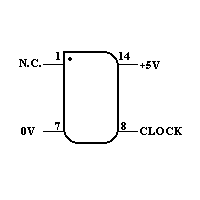
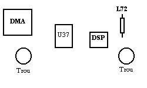
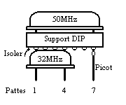

|
Le DSP 56001 du Falcon à 50 Mhz Auteur: Sébastien FAVARD
|
| INTRODUCTION
Bien que bon nombre de cartes
accélératrices boostent votre Falcon à des fréquences
de plus en plus impressionnantes, beaucoup d'entre nous ne peuvent se permettre
de tels investissements... Je vais vous présenter une petite modification,
fort simple, de votre moineau, pour que son très sympathique DSP
puisse
s'envoler vers des fréquences jusqu'alors jamais atteinte pour un
prix approximatif de moins de
100
Frs...
En effet, votre DSP peut être boosté au delà des 32 MHz, tout au moins à 50 MHz ! (voir par exemple les CENTurbo...). Les performances sont alors accrues en conséquence, puisque par exemple l'utilisation du petit programme Frac! de Brainstorm, démontre que celui-ci effectue (en 16 couleurs) 500 itérations d'une Mandelbrot en 36 secondes, au lieu de 54. Le gain du circuit de traitement du signal est de 56,25% (25 Mips au lieu de 16 Mips) !!! Au niveau de l'intervention à effectuer, celle-ci est extrêmement simple et ne nécessite que 3 soudures sur la carte mère ! Les possesseurs de cartes accélératrices de type Afterburner seront ravis de découvrir, que pour une somme modique, ils peuvent encore accélérer leur machine, afin d'améliorer leurs performances coté DSP, et d'arriver à des puissances de calculs hallucinantes ! Tout d'abord, je tiens à
préciser que bien que l'opération soit extrêmement
simple, je ne peut être tenu responsable d'un quelconque
MATERIELS NECESSAIRES POUR
L'OPERATION
- un fer à souder
avec un peu d'étain (de la soudure) ;
Coût global de l'intervention
Le principal achat est l'oscillateur,
qui coûte de l'ordre de 50 Frs. Cependant, si vous installez un dissipateur
thermique, vous devrez compter
CONFIGURATION CARTE MERE -
OSCILLATEUR
Tout d'abord, repérez l'emplacement
de l'oscillateur à quartz noté U37. Il se situe à
droite du ventilateur, entre deux trous assez gros. Vous pouvez facilement
le trouver, car il est métallisé et se trouve à coté
d'un imposant circuit, noté par U36 (le DMA). L'oscillateur permet
de générer un signal d'horloge d'une fréquence de
32MHz attaquant les circuits DMA (U36) et DSP (U38) du Falcon. Voyons tout
d'abord les significations des pattes de votre oscillateur à 50MHz.
. 
Quelques remarques sur le brochage,
pour les non initiés. Le brochage est noté suivant le support
de 14 broches (DIP 14) bien que l'oscillateur ne comporte physiquement
que 4 pattes. L'alimentation du circuit est effectuée grâce
aux pattes 7 et 14. En ce qui concerne la broche 1, il n'est pas nécessaire
de la connecter. Finalement, le signal généré, de
50MHz se trouve sur la patte 8. Pour ce qui est du "point" à gauche
de l'oscillateur, il n'est pas sur tous les circuits, puisque ce repère
est redondant par rapport à l'angle droit du support (toujours à
gauche) permettant d'identifier la patte 1 de l'oscillateur.
 Passons maintenant à l'emplacement U37 qui contient un oscillateur sur sa partie haute. Tout d'abord, présentons le brochage de cet emplacement de taille compatible avec le support 14 broches que vous allez utiliser... Emplacement physique U37 contenant l'oscillateur 32MHz aux emplacements 1,4,11 & 14. En ce qui concerne l'alimentation
de l'oscillateur, les emplacements 4 et 7 sont reliés à la
masse et le 14 au potentiel +5V. Nous voyons facilement, que la carte mère
de notre bébé peut supporter des oscillateurs de tailles
pour support de 8 ou 14 broches (dans les deux cas, le
|
INETRVENTIONS
Commençons la manipulation,
en coupant la connexion (coté soudure : pas celle ou se situe l'oscillateur
U37 !) entre les emplacements 8 et 11 en faisant attention de ne pas couper
profondément la carte mère, car celle-ci comporte plusieurs
couches internes. Pour ceux qui n'arrivent pas identifier la piste, vous
pouvez trouver les pattes de votre oscillateur entre deux trous de la carte
mère, et proche de la résistance R176. N'oubliez surtout
pas, que puisque vous êtes sur l'autre face, les emplacements sont
inversés !!! Donc ne coupez pas une autre piste par mégarde
! Mais rassurez-vous, car du point de vue oscillateur U37, seul les pattes
11 et 8 sont reliées, donc dès que vous avez trouvé
l'emplacement, vous ne pouvez plus vous tromper. A présent, votre
DSP ne possède plus de fréquence d'horloge. Maintenant, revenons
au coté composants, où les dernières opérations
vont être effectuées. Tout d'abord, prenez votre support DIP
de 14 broches, en coupant toutes les pattes sauf les deux correspondantes
aux emplacements des deux picots, c'est à dire les pattes 7 et 8.
Puis, enfoncez les deux picots dans ces deux emplacements en faisant attention
à la hauteur de ceux-ci afin d'obtenir le résultat présenté
sur le schéma ci-dessous. Après avoir trouvé la bonne
hauteur, c'est à dire en reposant complètement le support
DIP sur l'oscillateur 32MHz (U37) et sur les deux picots, soudez les picots
de chaque coté de la carte mère afin d'assurer une meilleur
rigidité. De plus, faites bien attention aux soudures, pour que
celles-ci ne soient pas en contact avec d'autres pistes à proximités
! A partir de maintenant, vous venez de récupérer le signal
du DSP et la masse nécessaire à l'alimentation de votre second
oscillateur, ce qui fait qu'il ne manque plus qu'à récupérer
un potentiel +5V pour terminer l'opération (la patte 1 de l'oscillateur
n'est pas utilisée).
 Principe de fixation du nouvel oscillateur. Maintenant, la modification touche
à sa fin, prenez votre fil et dénudez l'une des deux extrémités.
Après avoir étamé votre fil, soudez le à la
patte 14 (quasi coupée) de votre support DIP (c'est à dire
correspondant à l'alimentation +5V). Placez le support sur les deux
picots, puis
Retirez votre support, et préparez l'autre extrémité de votre fil destiné à récupérer le potentiel +5V de L72. Puis finalement, placez de nouveau votre support et soudez votre fil ! Voilà, il ne reste plus qu'à fixer du ruban adhésif entre le support et l'oscillateur 32MHz. Il ne reste plus qu'à allumer votre moineau afin de tester le bon fonctionnement de votre montage. En ce qui concerne l'échauffement
de votre DSP, puisque celui-ci tourne plus vite, il peut être nécessaire
de fixer un dissipateur thermique. Si vous obtenez un échauffement
important, achetez un dissipateur thermique ainsi qu'un peu de colle thermoconducteur
(et pas une autre !) pour pouvoir le fixer sur votre DSP. Je ne peux qu'encourager
une telle intervention, qui bien que augmente sensiblement le coût
de l'opération, vous assure que le DSP ne surchauffera pas et donc
que celui-ci ne risquera pas d'être détérioré
! Bien entendu, certains retorqueront, par
Normalement, cette intervention
étant relativement mineure, aucun problème ne doit survenir.
Cependant, soyez méthodique, et à chaque étape de
votre manipulation, vérifiez bien les connexions afin de ne pas
provoquer de courts-circuits. D'autre part, faites attention lorsque vous
couperez la connexion entre les deux horloges, afin de ne pas détériorer
d'autres couches de votre carte mère. Si vous êtes attentif
et soigneux, aucun problème ne doit survenir. Au cas ou votre Falcon
refuserait de fonctionner, retirez votre oscillateur du support et placez
coté soudure de la carte mère, un fil, ou mieux, une patte
d'une résistance entre les emplacements 8 et 11, afin de relier
de nouveau les deux horloges ! Si votre Falcon persiste toujours à
ne pas décoler, c'est que vous avez du détériorer
un autre élément, alors vérifiez bien toutes vos soudures...
RAPPEL SUR L'UTILISATION DES APPAREILS - Le voltmètre : celui-ci doit être utilisé en test de continuité (avec un "beep"), ou en ohmmètre, qui s'il affiche une résistance proche de 0 Ohm, indique que les deux points sont reliés. Il faut l'utiliser pour vérifier que les connexions entre les points destinés aux horloges des DMA et DSP soient bien déconnectées. De plus, vous pouvez l'utiliser pour vérifier que toutes vos soudures ne font pas contact avec d'autres pistes ! - Le fer à souder : celui-ci est indispensable pour souder le fil et donc étamer les extrémités (faîtes une fine couche de soudure sur celles-ci) ainsi que pour souder les deux picots. A chaque fois que vous souder, prenez peu de soudure, et chauffez bien le fil ou les pattes en faisant couler l'étain. Ici aucun montage de test, il suffit de brancher une manette Jaguar sur une des prises étendues de votre Falcon ou STE. La programmation de ces manettes va etre un peu plus compliquée que la méthode précédente, mais comme vous le verrez, cela reste raisonnable. En effet, pour lire des valeurs quelconques il faut procéder comme suit: SUBSTITUTION DE MATERIELS - La pince à dénuder : vous pouvez utiliser un ciseau et couper superficiellement la gaine du fil électrique, puis retirer cette partie. - Le voltmètre : soyez rigoureux et prenez votre temps pour souder et couper la piste. De ce fait, vous ne risquez quasiment aucun faux contact, ou court-circuit. Finalement, un moyen naturel, est l'utilisation de bons yeux pour vérifier que la piste est coupée ! - Les 2 picots : prenez un
autre support DIP (par exemple, un 8 broches) que vous couperez afin de
récupérer deux picots.
Pour toutes questions, vous pouvez
me contacter à mon adresse
e-mail, favard@linux.utc.fr
|
{kind=link}